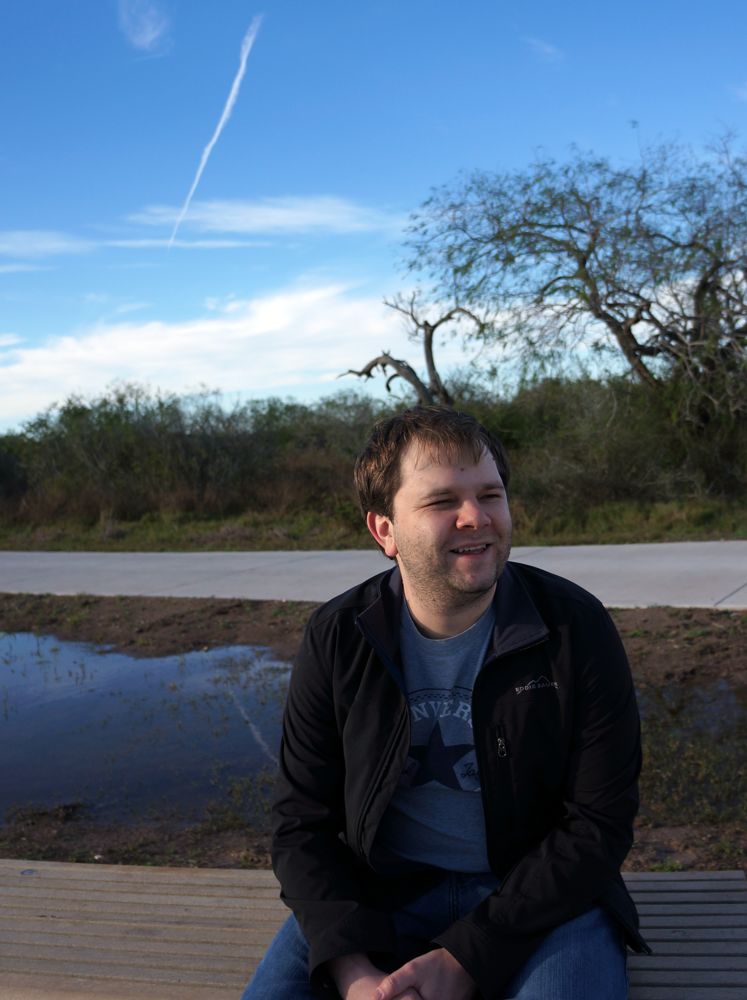

|  |
Alexey GlazyrinProfessor
|
My research interests include discrete and computational geometry, geometry of numbers, combinatorics. My Google Scholar profile is here
More information is available in my CV.